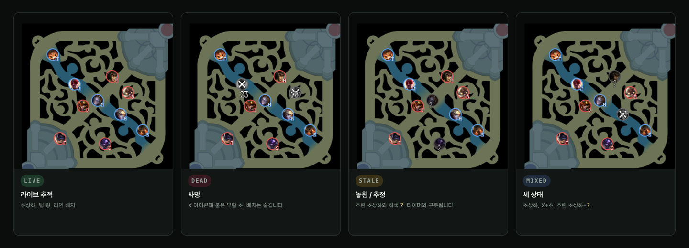
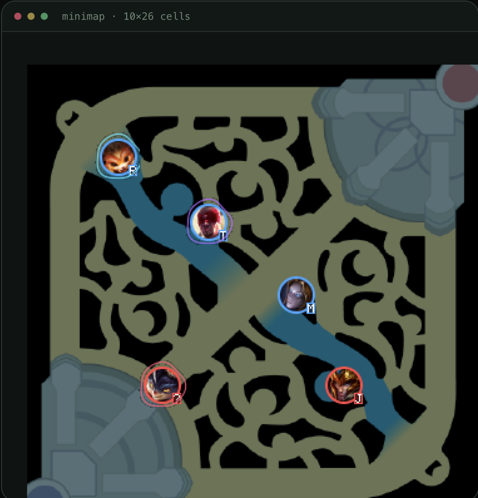

리그 오브 레전드 e스포츠를
터미널에서, 실시간으로.
라이브 보드, 공식 VOD 다시 보기, 방송 미니맵에서 직접 읽는 챔피언 위치. Worlds부터 LCK까지 단일 Go 바이너리로.
점수판, 선수 스탯, 오브젝트, 미니맵을 같은 게임 시각에 맞춰 재생합니다.
킬·골드 비례 바, 오브젝트 수, 선수별 KDA·CS·골드·HP 바를 0.5초마다 갱신합니다.
공식 VOD와 피드를 같은 시각에 맞춰 재생합니다. 일시정지, ±10초, 1×/2×/4× 배속.
공식 1080p 방송의 미니맵을 직접 읽어 10명의 위치를 추적합니다. 초당 5프레임.
사망은 X와 부활 초, 놓친 챔피언은 흐린 초상화와 ?로 구분합니다.
귀환은 청록 R, 텔레포트는 보라 T, 레드 팀 채널링은 빨강 ?. 팀 링 바깥에 물결 아우라로 표시합니다.
용·엘더·바론의 다음 등장과 소울 포인트를 게임 시계 기준으로 계산합니다.
클릭으로 창 선택과 행 이동, 더블클릭으로 열기, 휠로 스크롤. 한국어·영어·중국어 UI.
사망은 X 아이콘과 부활 초, 트래커가 놓친 챔피언은 흐린 초상화와 회색 ?로 표시합니다. 방송이 리플레이·데스크로 넘어가면 챔피언을 숨기고 그 이유를 패널에 적습니다.


팀 링 바깥 아우라의 색을 읽어 채널링을 판정합니다. 같은 색이 두 프레임 연속 잡혀야 인정하고, 라인 배지 대신 상태 문자를 붙입니다.
레드 팀은 귀환과 텔레포트가 같은 빨간 아우라라 둘을 구분하지 않습니다.
Go 1.21 이상. 미니맵을 쓰려면 yt-dlp, ffmpeg, JS 런타임이 필요합니다.
# 바이너리 설치 $ go install github.com/m16khb-org/esterm@latest # 대화형 앱 $ esterm # 최근 Worlds 경기 $ esterm lol schedule -l worlds -a -n 8
# 미니맵 의존성 (macOS) $ brew install yt-dlp ffmpeg deno # 소스 빌드 $ git clone https://github.com/m16khb-org/esterm.git $ cd esterm && go build -o ~/.local/bin/esterm .
자세한 사전 점검과 PATH 설정은 INSTALL.md를 참고하세요.
공식 경기 16경기(Worlds 7, LCK 3, LPL 3, LEC 3)를 방송 영상 전체로 돌린 백테스트입니다.
| 리그 | 경기 | 생존 검출 | 죽은 챔피언 오검출 | 킬 플립 ≤1초 |
|---|---|---|---|---|
| Worlds | 7 | 94.4% | 0.00% | 98.0% |
| LCK | 3 | 94.2% | 0.00% | 97.5% |
| LPL | 3 | 91.2% | 0.00% | 91.7% |
| LEC | 3 | 95.8% | 0.00% | 100% |
| 전체 | 16 | 94.0% | 0.00% | 97.2% |
13/16 경기가 기준을 통과했습니다. 전체 수치와 기준은 구현 상세에 있습니다.